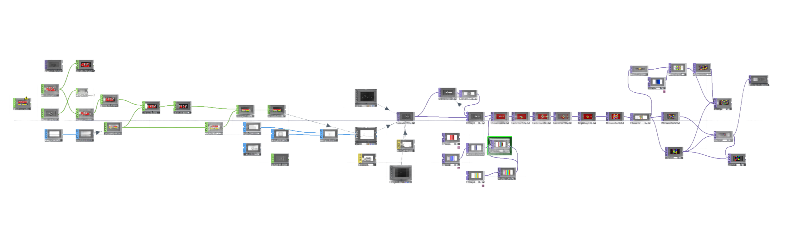
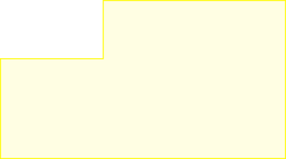
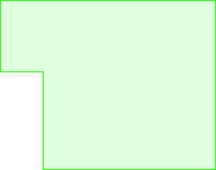

Case Study 03 — Live Visuals · Spec Work
Boiler Room
- Role
- Audio-reactive live visuals
- Tools
- TouchDesigner, After Effects
- Type
- Spec work — concert visuals
- When
- Spring 2026
Overview
This is a select few of the live concert visuals I created as spec work for Boiler Room, a live EDM venue with many artists and many different kinds of music. I created these with TouchDesigner and After Effects to display the range of genres that Boiler Room encompasses.
Formats
One visual system, cut for different screen shapes. Click any of them to watch it larger, with sound.
Artists, scope & approach
Artists
Boiler Room hosts many artists across many kinds of music, so the visuals were made to range across those genres rather than fit just one.
This was spec work, designed around the sound of artists who have played Boiler Room:
- Kaytranada Spotify ↗
- Fred Again Spotify ↗
- ¥ØU$UK€ ¥UK1MAT$U
Scope
- Main title sequence 1920 × 1080 · 30 s
- Arena banner 1920 × 540 · 15 s loop
- Square loop 1080 × 1080 · 15 s
- Vertical loop 1080 × 1920 · 15 s
- Red vertical loop 1080 × 1920 · 11 s
Approach
Audio-reactive motion graphics, built in TouchDesigner and finished in After Effects. How the program works is broken down below.
The Program
TouchDesigner
TouchDesigner is an audiovisual software that allows users to connect live audio into the program and processed by a series of nodes.
The software captures live audio and converts it to a wave spectrum. A line is created with 3D shapes that have values assigned to each point. The visual is rendered with a camera and light, then processed through a feedback loop, assigned colors, reflected through mirrors, and composited with rotations.



- Audio to Wave Spectrum Live audio is captured and converted to a wave spectrum.
- 3D Rendering A line is created with 3D shapes that have values assigned to each point, rendered with a camera and light.
- Feedback Loop The visual is processed through a feedback loop.
- Colors Colors are assigned.
- Mirrors It's reflected through mirrors.
- Composite Everything is composited with rotations.